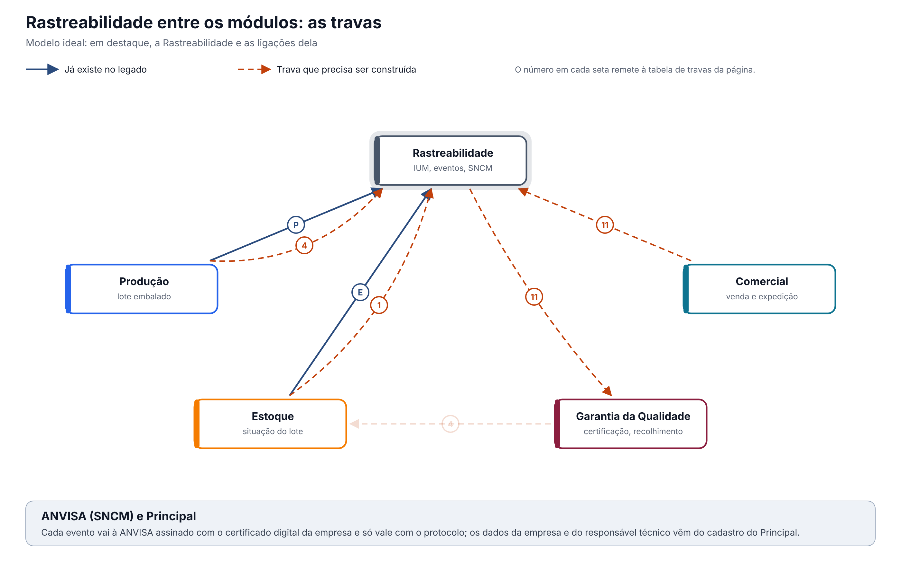

O ideal entre os módulos. A Rastreabilidade não decide sozinha se um lote pode receber IUM ou ser expedido: consulta a situação única do lote, que só fica "liberado para venda" depois da certificação da Pessoa Delegada. E entrega à Garantia da Qualidade, num recolhimento, a lista das embalagens e de onde cada uma foi parar. Versão 0.1, de 12/10/2026, para validação com Assuntos Regulatórios e a Garantia da Qualidade.
Esta página mostra só as travas que envolvem a Rastreabilidade. O documento completo, com a situação única do lote e as 16 regras para todos os módulos, é "Qualidade entre os módulos: situação do lote e travas" (modelo-ideal/01-qualidade-entre-modulos.md), na Visão entre módulos. O módulo por dentro está em "A Rastreabilidade ideal" (ras-ideal.md).
1. O desenho

Em destaque, a Rastreabilidade. As linhas cheias são as ligações que já existem no legado:
- P: a geração de IUM pede à Produção as produções liberadas, com lote, validade, registro e GTIN. Os dados chegam pelo navegador e não são relidos na gravação.
- E: o Estoque grava eventos de entrega e recebimento pelo serviço da Rastreabilidade, sem ler a resposta.
As demais, tracejadas, precisam ser construídas. A seta apagada (4, da GQ ao Estoque) mostra de onde vem a certificação que a Rastreabilidade consulta. Embaixo, a ANVISA: hoje o envio é simulado e nenhuma declaração chega a ela.
2. As travas que envolvem a Rastreabilidade
| # | Trava | Referência | O que a Rastreabilidade faz | Com quem | No legado hoje |
|---|---|---|---|---|---|
| 1 | Situação única do lote, respeitada por todos | Arts. 157 e 189 | Confere a situação do lote na geração dos IUM e em cada evento de expedição; lote retido ou reprovado bloqueia os seus IUM | Estoque | O IUM, depois de gerado, não acompanha a situação do lote |
| 3 | Desvio retém o lote | Art. 8º, IX | Lote com desvio aberto não recebe evento de expedição | GQ, Estoque | Nenhuma ligação com a GQ |
| 4 | Liberação para venda pela Pessoa Delegada | Art. 8º, XV | Gera IUM e registra a expedição só de lote certificado pela Pessoa Delegada | Produção, GQ, Estoque | Exige só a produção "liberada" na Produção, que não é a certificação |
| 11 | Reclamação e recolhimento retêm e recolhem lotes | Arts. 319 e 343 | Entrega à GQ, por lote, as embalagens (IUM), as caixas e o destinatário de cada uma; recebe do Comercial a venda de cada expedição | Comercial, GQ | Os eventos guardam o destinatário, mas sem ligação com a venda nem com a GQ; a remessa do Comercial não gera evento |
| 16 | Integrações confiáveis: a falha avisa e não deixa a operação pela metade | Guia 33, 9.3.2.3 | Um evento só fica "enviado" com o protocolo da ANVISA; a falha fica à vista e é reenviada; o Estoque e o Comercial leem a resposta da Rastreabilidade | Estoque, Comercial, ANVISA | Envio simulado: a tela mostra "envio efetuado com sucesso" sem envio; a fila de mensagens não tem leitor |
3. Regras que valem para todas as travas
Valem também aqui as regras gerais do documento completo (requisitos 12 a 16): histórico de toda alteração com motivo, registro no momento da ação com hora do servidor, assinatura eletrônica nas decisões, acesso por função conferido em toda gravação e integrações que avisam quando falham.
Particulares da Rastreabilidade:
- Um só lugar para os eventos do SNCM. Hoje o Estoque tem a sua própria tela e as suas tabelas de evento. No modelo ideal, os eventos nascem no Estoque, na Produção e no Comercial, mas são registrados e declarados só pela Rastreabilidade.
- A retificação é um ato regulatório: tem motivo obrigatório, assinatura eletrônica e é feita por pessoa diferente de quem registrou o evento.
- Os dados da etiqueta vêm do cadastro da empresa no Principal, nunca do programa.
O que a ANVISA pede: textos citados
Texto literal das normas citadas em cada tema, extraído dos arquivos da pasta Documentação/ (RDC nº 658/2022 em português e Guia nº 33/2020) por homologacao/ferramentas/citar_normas_diagnostico.py. "(...)" marca trechos omitidos. No portal, clique na referência de cada tema para ver o texto.
Tema 1 · Situação única do lote, respeitada por todos
RDC 658/2022, art. 157
Art. 157. Os materiais recebidos e os produtos acabados devem ser fisicamente ou administrativamente colocados em quarentena imediatamente após o recebimento ou processamento, até que sejam liberados para uso ou distribuição.
RDC 658/2022, art. 189
Art. 189. Somente matérias-primas que tiverem sido liberadas pelo departamento de Controle de Qualidade e que estiverem dentro de sua data de reteste devem ser utilizadas.
Tema 3 · Desvio retém o lote
RDC 658/2022, art. 8º
Art. 8º Um Sistema da Qualidade Farmacêutica adequado à fabricação de medicamentos deve garantir que:
(...)
IX - os resultados do monitoramento de produtos e processos sejam levados em consideração na liberação do lote, na investigação de desvios e com o objetivo de tomar ações preventivas para evitar desvios potenciais que possam ocorrer no futuro;
(...)
Tema 4 · Liberação para venda pela Pessoa Delegada
RDC 658/2022, art. 8º
Art. 8º Um Sistema da Qualidade Farmacêutica adequado à fabricação de medicamentos deve garantir que:
(...)
XV - os medicamentos não sejam comercializados ou distribuídos antes da Pessoa Delegada pelo Sistema de Gestão da Qualidade Farmacêutica ter certificado que cada lote do produto foi produzido e controlado de acordo com os requerimentos de registro e quaisquer outras normas relevantes à produção, ao controle e à liberação de medicamentos;
(...)
Tema 11 · Reclamação e recolhimento retêm e recolhem lotes
RDC 658/2022, art. 319
Art. 319. Deve haver um sistema e procedimentos apropriados para registrar, avaliar, investigar e revisar reclamações, incluindo possíveis desvios de qualidade; e, se necessário, para recolhimento dos medicamentos destinados a uso humano, incluindo os experimentais, de forma efetiva e imediata, da rede de distribuição.
RDC 658/2022, art. 343
Art. 343. Devem existir procedimentos escritos, que sejam regularmente revistos e atualizados, para a determinação das atividades de recolhimento e de outras ações de mitigação de riscos.
Tema 16 · Integrações confiáveis: a falha avisa e não deixa a operação pela metade
Guia nº 33/2020, item 9.3.2.3 (Requisitos Operacionais)
Dados – requisitos relacionados ao manuseio de dados, considerando-se o seu impacto na segurança do paciente, na qualidade do produto e na integridade dos dados, abrangendo os seguintes pontos: - Definição dos registros eletrônicos; - Definição dos tipos de dados, incluindo a identificação das características, formatação, parâmetros críticos, intervalo e formato de datas válidos, limites e exatidão e assim por diante; - Onde e como os dados serão gravados (ex.: bancos de dados relacionais, arquivos criptografados etc.) - Campos necessários; - Migração de dados (importação e exportação); - Entrada de dados e subsequente edição; - Backup e recuperação; - Requisitos para arquivamento; - Segurança dos dados e integridade.
Interfaces – devem ser definidas (se aplicável), abrangendo os seguintes pontos: - Interface(s) com o usuário – definidas em termos de níveis de acesso (operador, administrador, gerente do sistema) ou funções quando apropriado; - Interface(s) com outros sistemas; - Interface(s) com equipamentos, tais como sensores ou atuadores. Isto pode incluir listas de I/O (entrada e saída) para sistemas utilizados para controle de processos; - Forma de entrada e saída de dados pelos usuários (ex.: teclado, leitor de código de barras, impressoras etc.).